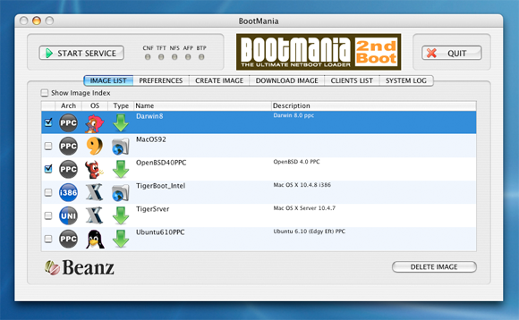

|
|

|
About BootMania
BootMania, that enables multiple computer to boot from a single disk image over IP network.
Easily create NetBoot or NetInstall images from installation CD/DVD, the Internet or installed OS.
|

|
|
BootMania became freeware - September 23, 2013
For old Mac users. No Warranty. No Question. :)
|
OS supported by BootMania
BootMania supports the following OS.
NetBoot
- Mac OS 9.2
- Mac OS X ( 10.3/10.4 )
- Darwin ( 7.X/8.X ) OpenDarwin ( 7.X )
NetInstall
- Mac OS X ( 10.3/10.4 )
- Darwin ( 7.X/8.X ) OpenDarwin ( 7.X )
- Linux ( Fedora/Debian/YellowDog/Ubuntu/openSUSE/CentOS )
- BSD ( NetBSD/OpenBSD )
NOTE:About Linux and BSD, it will not operate well, since almost all download sites were lost.
|
System Requirements
Apple Macintosh / Mac OS X 10.4.7 - (Tiger) / PPC i386
|
Download
- BootMania licence file maker
Procedure which creates a license file :
(1) Check your Purchase Code on BootMania.
ex) Purchase Code=[003065E79AFE]
(2) Running a command in Mac OS X Terminal window.
$ ./BMLicenseFileMaker 003065E79AFE
---Check DATA
OK
---LAST DATA
OK
---MAKE LICENSE FILE
FILE MAKE OK
$ mv BootMania_003065E79AFE.bzl BootMania.bzl
BootMania.bzl is licence file of BootMania.
(3) Import licence file on BooMania.
Acknowledgment
We wish to express our gratitude to the people who gave the use permission of the image for Linux, BSD and Darwin.
- Tux
- The BSD Daemon
- Hexley
And, We wish to express our gratitude to the people of the open source community.
|
|